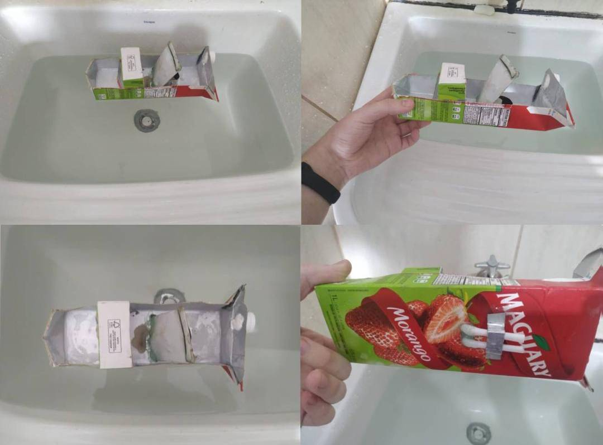

Para fazer o barco se movimentar, fervemos a água dentro de uma bolsa de metal usando vela, fazendo com que a água presente dentro do metal vire vapor que sai pelos canudos presentes debaixo do barco, assim movimentando o barco